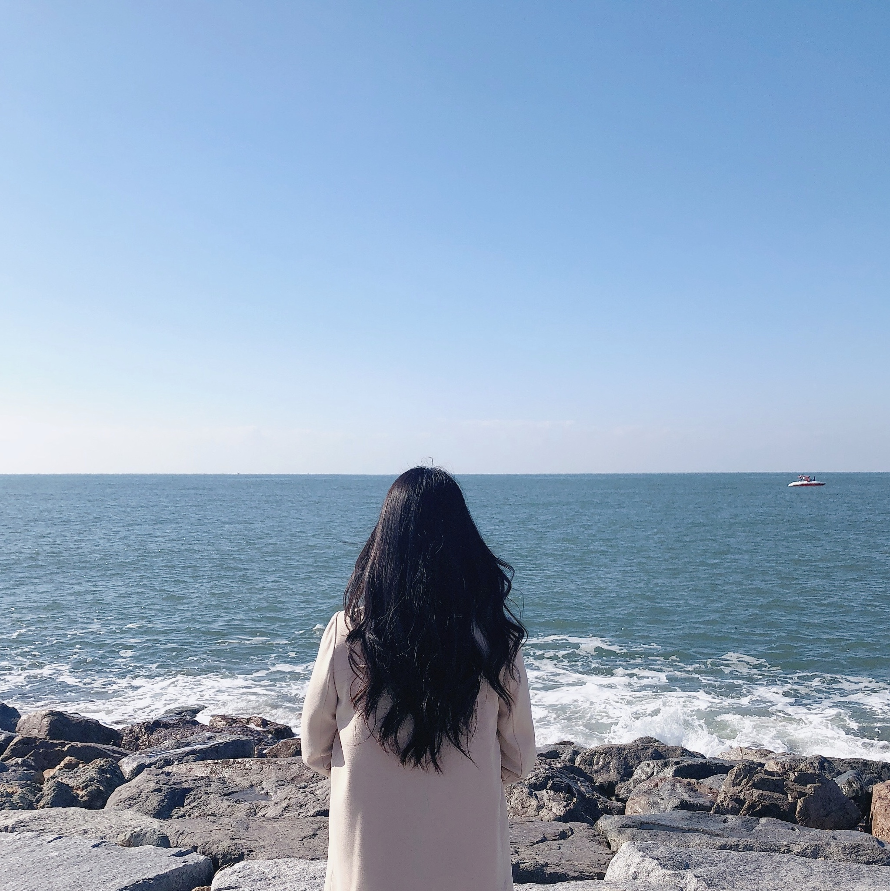

자기소개
여행
개발자로드맵
회원가입
군산🚞
강릉🌊
세부⭐
군산🚞
초원사진관
영화 '8월의 크리스마스'의 촬영지로 유명한 초원사진관🙂
실제로 운영되는 사진관은 아니며 군산시에서 관리하는 관광지 중 하나이다.
군산 경암 철길마을
기찻길을 따라 추억여행을 할 수 있는 군산 경암 철길마을.
포토존이 많아서 사진찍기 좋은 관광지🙂
장미칼국수
군산 주민에게 추천받은 칼국수 맛집😋

선유도해수욕장
군산 주요 관광지에서 조금 멀지만, 예쁜 바다가 있는 선유도 해수욕장😍
강릉🌊
안목해변
카페거리가 유명한 강릉의 안목해변. 카페에서 바다를 보면 뷰가 환상적이다😍
강릉파불고기
산더미같은 불고기와 파가 쌓여있는 파불고기😋
경포대 해수욕장
강릉의 상징 경포대 해수욕장🙂
세부⭐
솔레아 리조트
세부의 여러 리조트 중 하나인 솔레아 리조트.
넓어서 산책하기 좋고 뷰가 예쁘다. 조식도 맛있다😋
망고와 망고칵테일
세부의 대표과일 망고와 망고칵테일
한국에서 먹는 망고보다 훨씬 싱싱하다😋
탑스힐
높은 산꼭대기에서 세부를 한눈에 내려다 볼 수 있는 야경명소 탑스힐
전망대의 안쪽에는 상점들이 있고 간단한 간식거리들을 판매한다🙂
막탄시내투어
막탄 시내에 있는 산토리뇨 성당, 라푸라푸 공원.
이국적인 풍경이 인상적이다😎
맨 위로 올라가기☝